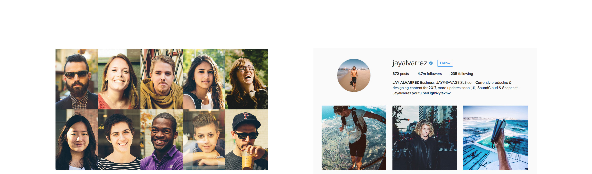
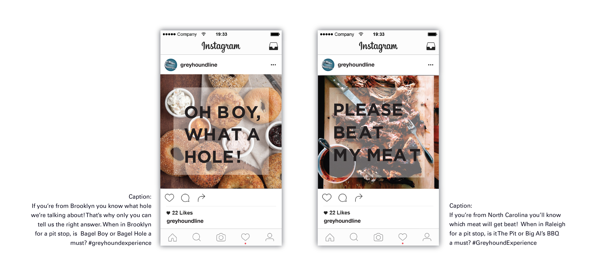
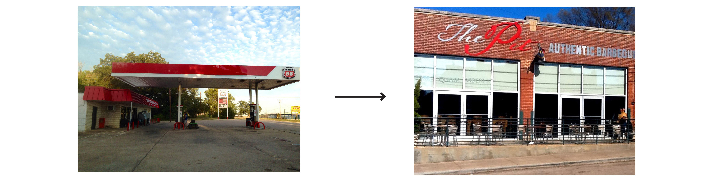
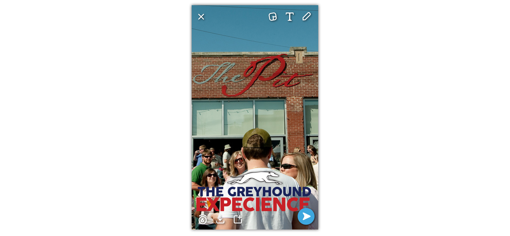
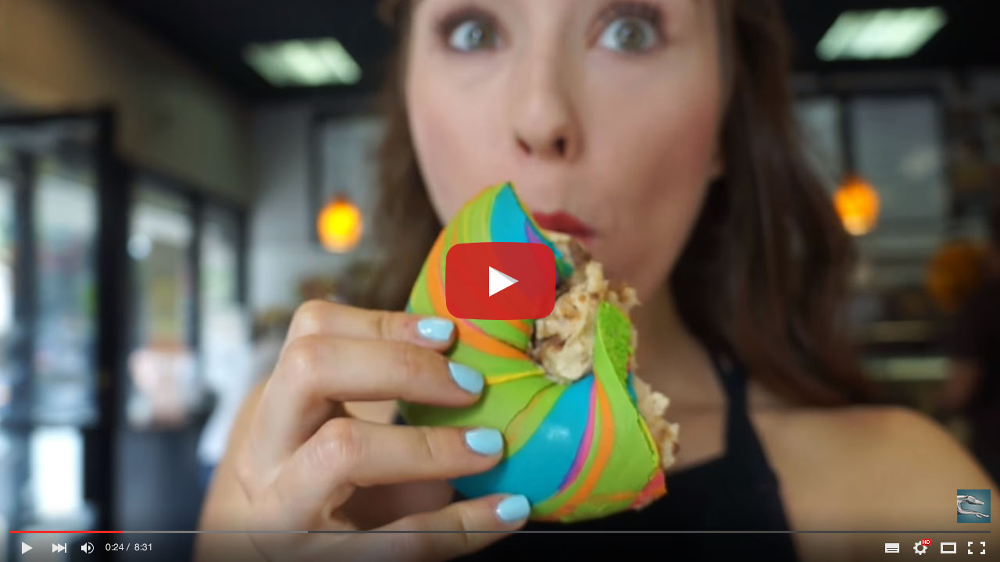

GREYHOUND
Reconnecting America one stop at a time. We need millennials to ride the bus.
Greyhound needs to signal to the world they’re a really savvy choice for their
customers and potential customers. Passengers are bold to consider us, and for
their boldness, they need to know they’re getting something in return: A far
better in value than anybody could imagine.
Find 25 millennials from different groups willing to go on the Greyhound
Experience. Get Jay Alvarez, and other influencers to join our ride and get media attention

Ask locals through our social media platorm where’s the best place to stop at.

Change the typical stop for the post most voted on instagram and bring
locals and riders together

Encourage our riders to share their experience on their social media

Recap video

Bring back the love for roadtrip by adding value to the experience and giving a
meaning to the stops